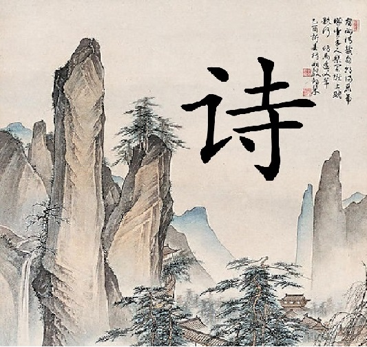

唐诗（Tang poetry） 泛指创作于唐代的诗，也可以引申指以唐朝风格创作的诗，上承魏晋南朝诗，下开宋诗。 “九天阊阖开宫殿，万国衣冠拜冕旒。 ”唐代中国经济繁荣、社会安定，对外交往频繁，思想自由奔放，近体诗逐渐发展和完善，成为中国古代文学的高峰和典范。唐诗对于后人研究唐代的政治、民情、风俗、文化等有重要的意义和价值。
唐诗的形式是多种多样的。唐代的古体诗，主要有五言和七言两种。近体诗也有两种，一种叫做绝句，一种叫做律诗。绝句和律诗又各有五言和七言之不同。所以唐诗的基本形式基本上有这样六种：五言古体诗，七言古体诗，五言绝句，七言绝句，五言律诗，七言律诗。古体诗对音韵格律的要求比较宽：一首之中，句数可多可少，篇章可长可短，韵脚可以转换。近体诗对音韵格律的要求比较严：一首诗的句数有限定，即绝句四句，律诗八句，每句诗中用字的平仄声，有一定的规律，韵脚不能转换；律诗还要求中间四句成为对仗。古体诗的风格是前代流传下来的，所以又叫古风。近体诗有严整的格律，所以有人又称它为格律诗。
唐诗的形式和风格是丰富多彩、推陈出新的。它不仅继承了汉魏民歌、乐府传统，并且大大发展了歌行体的样式；不仅继承了前代的五、七言古诗，并且发展为叙事言情的长篇巨制；不仅扩展了五言、七言形式的运用，还创造了风格特别优美整齐的近体诗。近体诗是当时的新体诗，它的创造和成熟，是唐代诗歌发展史上的一件大事。它把中国古曲诗歌的音节和谐、文字精炼的艺术特色，推到前所未有的高度，为古代抒情诗找到一个最典型的形式，还特别为人民所喜闻乐见。但是近体诗中的律诗，由于它有严格的格律的限制，容易使诗的内容受到束缚，不能自由创造和发挥，这是它的长处带来的一个很大的缺陷。
参考资料：百度百科
©版权所有 3145131436@qq.com